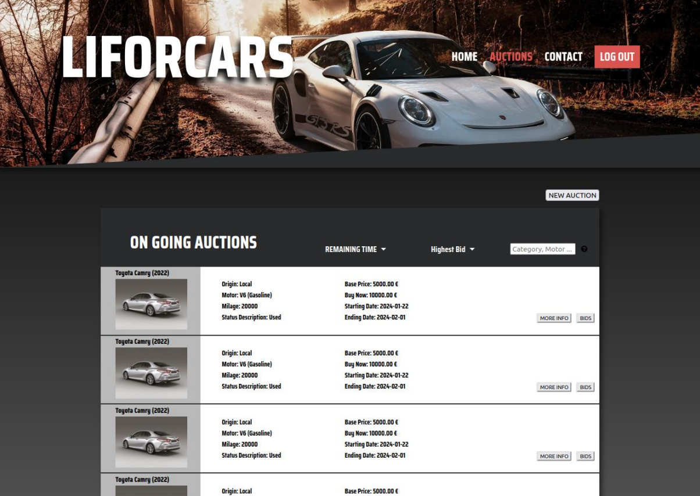

LIForCars Car Auction System
ASP.NET Core - C# + HTML + CSS + JavaScript
Project developed in the scope of the subject Laboratórios de Informática IV (Computer Laboratories IV) in the 1st semester of the 3rd year of my degree.
LIForCars is a comprehensive auction platform designed to facilitate online car auctions. It allows users to list cars for auction, place bids on vehicles, and manage auctions and bids with ease. Built with ASP.NET Core and Entity Framework, the platform offers a robust and scalable solution for online car auction businesses.

Workshop Database System
Java
Project developed in the scope of the subject Desenvolvimento de Sistemas de Software (Software System Development) in the 1st semester of the 3rd year of my degree.
Workshop Database DAO is a comprehensive tool designed to manage various aspects of a vehicle service center. It includes client and employee management, service scheduling, vehicle tracking, and invoice generation.
Delivery Search Algorithms App
Python
Project developed in the scope of the subject Inteligência Artificial (Artificial Intelligence) in the 1st semester of the 3rd year of my degree.
This project is a delivery app that uses divers search algorithms to come upon the best path solution, for a company named HealthPlanet.
Cloud Computing - FaaS
Java
Project developed in the scope of the subject Sistemas Distribuidos (Distributed Systems) in the 1st semester of the 3rd year of my degree.
This project implements a distributed system for managing and executing tasks. It consists of a central server that handles client requests and a client application for interacting with the server.
P2P File Transfer
Python
Project developed in the scope of the subject Comunicações por Computador (Computer Communication) in the 1st semester of the 3rd year of my degree.
This project is a P2P (peer-to-peer) app inspired in BitTorrent, it uses TCP / UDP connections to send messages between the Tracker and the Nodes, sending the messages directly from Node to Node.
Real Estate Database Management System
SQL + Python
Project developed in the scope of the subject Bases de Dados (Databases) in the 2nd semester of the 2nd year of my degree.
A simple database management system for a supposed Real Estate Business made in SQL with a small Python Script.
Vintage Marketplace App
Java
Project developed in the scope of the subject Programação Orientada a Objetos (Object Oriented Programming) in the 2nd semester of the 2nd year of my degree.
Vintage is an online marketplace management system focused on various articles, where users can sell, buy, and manage orders. This Java project includes classes for handling articles, orders, users, and carriers, providing a solid foundation for an e-commerce application.
Program Execution Monitoring and Tracking
C
Project developed in the scope of the subject Sistemas Operativos (Operating Systems) in the 2nd semester of the 2nd year of my degree.
This University project involves creating a C program that manages and monitors process executions in a Unix-like system. It features process creation, execution using fork-exec patterns, real-time monitoring through FIFOs (named pipes), and performance analysis by tracking execution times. The project aims to provide practical insights into operating systems' process management and inter-process communication.
Taxi Database Dashboard
C
Project developed in the scope of the subject Laboratórios de Informática III (Computer Laboratories III) in the 1st semester of the 2nd year of my degree.
This project in C is a comprehensive solution for managing and analyzing ride-sharing data. It includes functionalities to process driver, user, and ride information, perform various queries, and conduct both functional and performance testing.
Stack Oriented Language Interpreter
C
Project developed in the scope of the subject Laboratórios de Informática II (Computer Laboratories II) in the 2nd semester of the 1st year of my degree.
This university project implements a stack-based language interpreter in C. It's designed to read and execute a series of operations on a stack, handling various data types and operations including mathematical calculations, logical operations, stack manipulations, variable handling, and more.
Jumper Dude
Haskell

Project developed in the scope of the subject Laboratórios de Informática I (Computer Laboratories I) in the 1st semester of the 1st year of my degree.
Jumper Dude is a game inspired in Block Dude. This game includes a series of levels, each requiring logical thinking and strategic movement to solve.